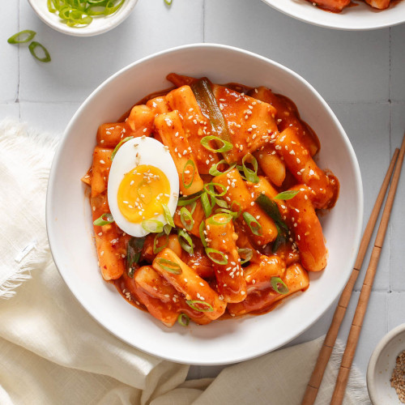

Tteokbokki 떡볶이

Description
Tteokbokki 떡볶이 is one of the most popular street foods in Korea.
They consist of chewy rice cakes cooked in a spicy red gochujang sauce
This dish is savory, delicious, and highly addictive!
There are many variations of this dish but today, we'll
be making the classic tteokbokki that is spicy, umami-rich, and saucy.
Ingredients (serves 2)
Main
- 12 ounces Korean rice cakes, separated and soaked in hot water for 10 minutes
- 5.3 ounces Korean fish cakes, rinsed over hot water & cut into bite-sized pieces
- 2 cups Korean dashi stock
- 2 ounces onions, thinly sliced
Sauce (mix in a bowl)
- 3 tbsp gochujang
- 1.5 tbsp raw sugar
- 1 tbsp gochugaru
- 1 tsp soy sauce
- 1 tsp minced garlic
Garnish
- 1 tsp roasted sesame seeds
- 1 tsp sesame oil
- 1 stalk green onion, finely chopped
Steps
- Boil the soup stock in a shallow pot over medium-high heat.
- Mix in the tteokbokki sauce.
- Once the seasoned stock is boiling, add the rice cakes, fish cakes, and onions.
- Cook for 3-5 minutes until the rice cakes are fully cooked
- Simmer on low heat for 2-4 minutes in order to thicken the sauce and deepen the flavor.
- Turn off the heat and mix in the sesame oil
- Plate, then add the sesame seeds and green onion